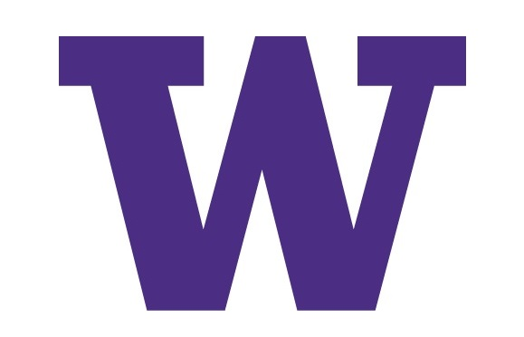

Amanda Toop
Information Technology Specialist
I love working with people and technology to solve problems. For the majority of my working career this has resulted in roles that blend first and second tier Help Desk, System Administration (usually ticketing/CRM system design and administration) and Business Analysis. I find bringing bringing order to chaos exciting! To me, every problem is a fresh mystery to solve and I really enjoy that.
My current focus is on improving my coding/design skills with the intent of becoming a web developer. I really enjoy creating products that are easy to use, efficient, and (ideally) look aesthetically pleasing.
Outside of technological interests I am an avid cook and Peloton devotee.
Featured Projects
View selected projects below. Complete list of projects can be found at amandatoop.com/projects.html.

Web Design
This is my solution for the Frontend Mentor Order Summary Component" challenge.
For this project participants were instructed to build out an order summary card to match provided designed images, including a couple hover states.
This is my first Frontend Mentor challange and I really enjoyed it.
View project
How to Sell Clothing Online Website
"How to Sell Clothing Online" is a project I decided to implement as part of a plan to create a sandbox for exploring new ideas and technology outside of the area I typically work. The goal was to build a site and then spend time optimizing both the content and technology, while also having a project I can always go back to when I want to explore topics like graphic design, SEO, or social media marketing.
The main hurdle of this project was optimizing Wordpress. I chose a fairly inexpensive hosting plan and this ended up being problematic in terms of site speed. Ultimately I resolved the issue by switching the site theme to Astra and using the plugin AMP.
I really enjoyed learning about new-to-me subjects like Google Analytics, Pinterest marketing, and tools like CoSchedule's Headline Analyzer.
View projectWork Experience

Versatile customer focused Information Technology Specialist with extensive experience supporting a wide range of users and technology. Comprehensive background in software administration, user access management, requirements gathering, researching, planning, and implementing new systems as well as migrations..
Areas of expertise include:
- Technical Troubleshooting
- Product/Process Ownership
- Issue Tracking and Reporting
- Training
- Creating and Maintaining Documentation
- Developing Policies and Procedures
- Improving Process Accuracy and Efficiency
Technical Skills:
- Microsoft Windows environment Hardware/Software/OS/Network troubleshooting. Exchange, Sharepoint, Active Directory Users and Computers, O365/Microsoft Office. Some experience with Microsoft Azure administration - Azure Active Directory, implementing role-based access control, creating resource groups, implementing storage, basic vm creation, billing and cost management.
- Administration of - Adobe Creative Suite, Atlassian Cloud Jira/Confluence and Smartsheet.
- Limited experience with Salesforce, Linux, Powershell, CSS, HTML.
- Other: Microsoft Teams, Zoom, and Canvas LMS.
Information Technology Specialist
University of Washington
2008-present.
Provide Tier 1 and Tier 2 technical support for 200 administrative staff, 6,000 students, and 100 instructors across 4 work sites - maintaining a high level of customer service, technical expertise, and quality communication with an average email annual ticket volume of 3,800 in addition to phone and walk up requests.
Areas of support include hardware/software/OS/network connectivity for approx 600 Windows 10 devices, network file access via on prem mapped drives and cloud-based file storage, O365 and Office 2016, account management/permissions via Active Directory Users and Computers, Canvas LMS administration and Zoom/Adobe Connect video support for online students.
Software administration - CRM and Service Desk (design, implementation, customization, and ongoing administration), user access management, business analysis (requirements gathering/research/planning/implementing new systems) as well as providing technical solutions and troubleshooting.
Education
Smith College - Northampton, MA
BA in Art History, Minor in Computer Science